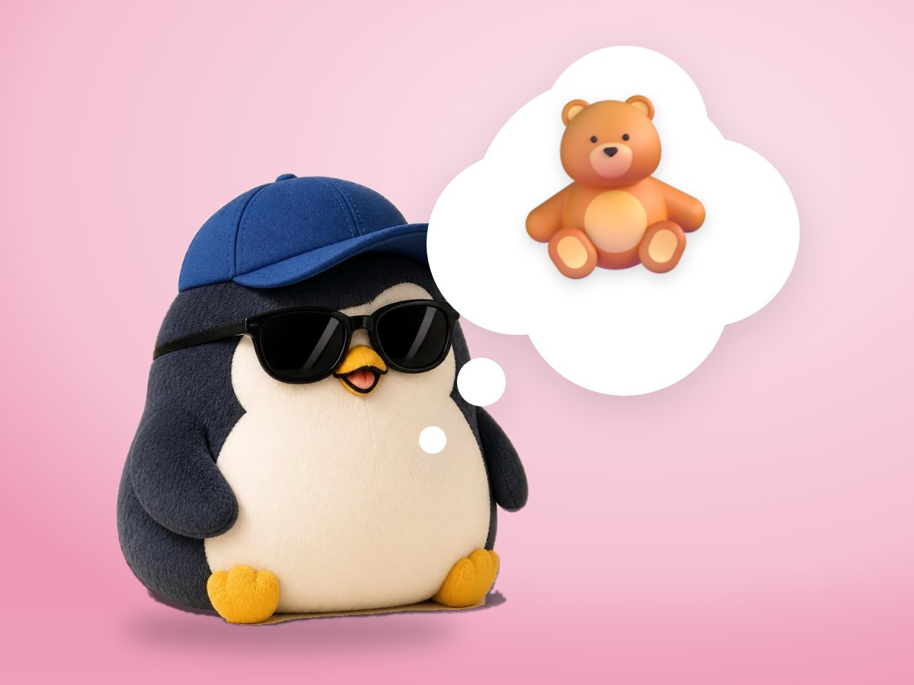

📝 DRAFT · 下書き — まだ本番に出していません · 下書き一覧
🐧 EVERYDAY LIFE⚡ 20 SEC
Keep 1 thing that makes you feel safe just by thinking of it 🧸

Favorite Blanket
Some little kids never let go of their favorite blanket.
For Adults Too
It seems adults also need a "safety blanket" for the heart.
Pick One
Choose 1 thing that makes you feel calm just by thinking of it.
For example, someone's smile, an old pet, your hometown view, or your usual food.
⚡ TRY IT
Wrap the penguin in your safety blanket
Brrr… The storm is scary. Think of 1 safe thing.
Ahh… 💛 The storm is still there, but I feel OK.
🧣 Your blanket last time:💛
Stormy Days
Even on a stormy day, just remembering it makes you a little warmer.
📚 I learned this from the Japanese blog "Panda no Ondo".